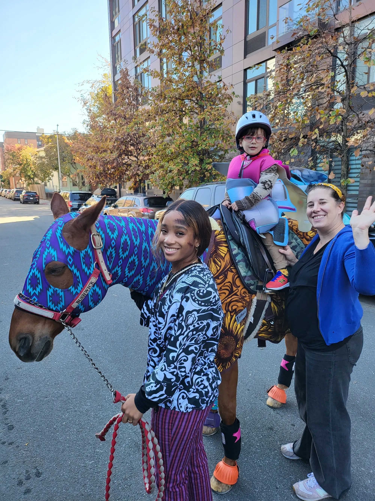

Horse care & riding programs for all ages, from pony rides for toddlers to advanced adult lessons and trail rides through historic Prospect Park.
Be™ Brooklyn Equine operates out of Prospect Park Stable — Brooklyn's last active stable in a landmark Olmsted & Vaux park.
Established in 1917, the stable took on new life in 2018 when Be•Brooklyn Equine became its steward. Today it is home to second-career horses: animals retrained with focused healthcare, attentive socialization, and work suited to their minds and bodies.
Through our Helping Hoof initiative, we place horses in healthy, nurturing environments; promote equine-assisted therapy and learning; and advocate for urban infrastructure that keeps horses and humans safe.
We also run a waste-management program that donates horse manure to local community gardens — because good stewardship extends beyond the barn.
Plan Your Visit
Riding, learning, and connecting with horses in the heart of Brooklyn.
Introductory rides for toddlers and young children. Pony Rider season runs May–October, Sundays 1–3 PM, rain or shine.
Indoor semi-private lessons for kids and beginner-to-advanced classes for adults, taught by patient, experienced instructors.
Guided hacks along Prospect Park's 3.5-mile historic bridle path — scenic woodlands, meadows, and ravines on horseback.
Multi-session programs where children learn both riding and comprehensive horse care, from grooming to ground work.
Groundwork, grooming, bathing, and stable management. We teach riders to treat horses as partners, not just lesson animals.
Custom pony experiences for birthdays and special occasions. Email Be@Quadrozzi.com for "my pony" packages.
Something for every rider, from first-timers to seasoned equestrians.
Sunday tickets for little ones, May–October. A gentle first encounter with horses in a festive, safe setting.
Ongoing sessions that combine riding instruction with hands-on horse care and stable chores.
Beginner through advanced lessons, in partnership with Manhattan Riding Club.
Guided rides through Prospect Park for individuals and families wanting a one-of-a-kind urban equestrian experience.
Real reviews from Google Maps riders and families.
"Great afterschool/weekend riding program for kids. They learn all about how to care for horses and then get semi-private lessons. The staff are friendly and organized. This place has really enriched my kid's life!"
"Omgoodness this place is a Jewel !! From the ppl to the location. The horses are well taken care of and the kids can enjoy watching the horses get bathed. Rides through Prospect park are offered at an affordable rate."
"The staff is well educated and ensures a good experience for all students. You can tell these animals are treated as partners, not just lesson horses."
| Mon–Sat | By appointment / program |
| Sunday | 1:00 PM – 3:00 PM (Pony Rider) |